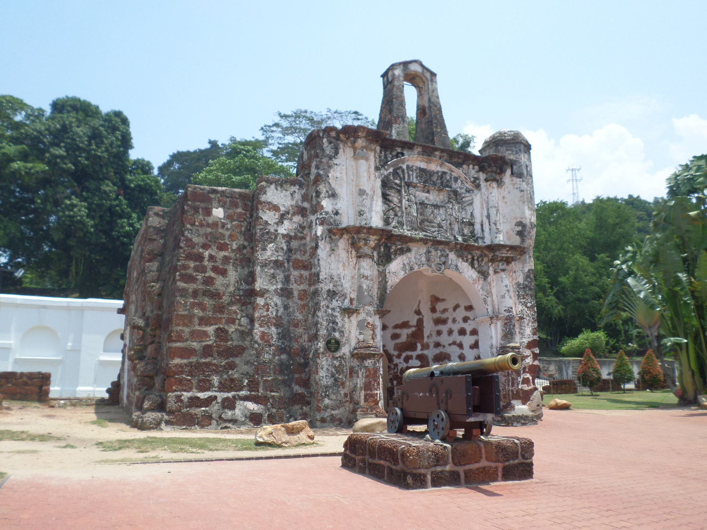
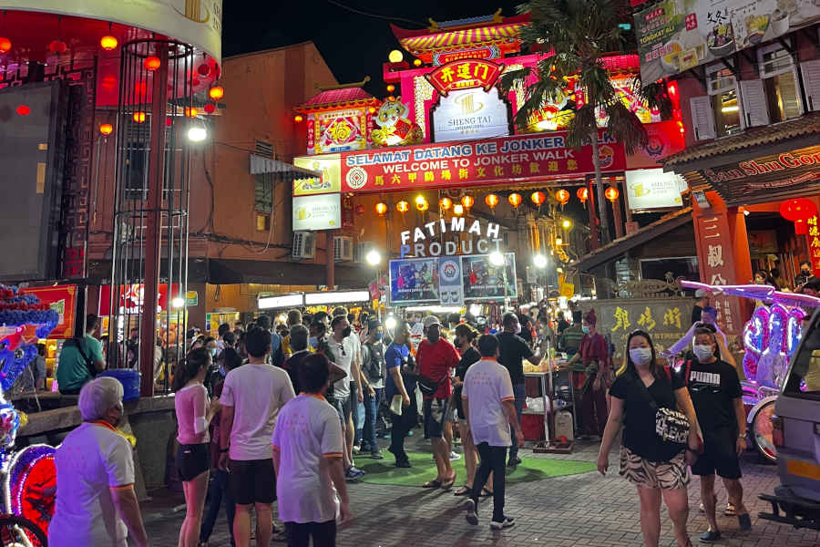
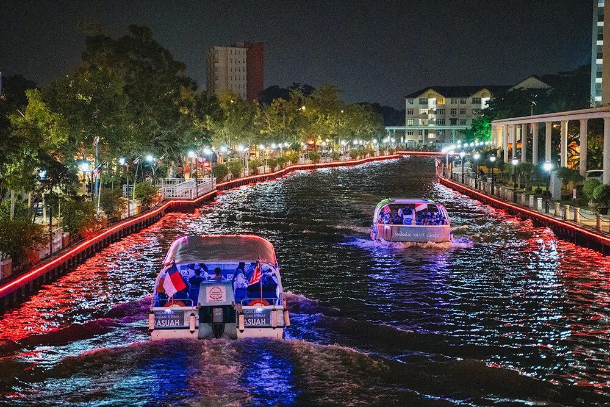

Melaka isn’t just a historical state — it’s my home, my memories, and where my heart always returns. I was born and raised here, and growing up among its rich culture, food, and warm community is something I’ll always cherish.
Fun Facts About Melaka
- Recognised as a UNESCO World Heritage City since 2008
- Famous for Asam Pedas, Cendol, Coconut Shake
- Home to the iconic A Famosa & Stadthuys red buildings
- Popular river cruise along Sungai Melaka
Favourite Places in Melaka

A Famosa Fort
One of the oldest European architecture remains in Asia. I always love the history and photo spots here.

Jonker Street
Jonker Street is my favourite spot for weekend walks! It's full of delicious food, local crafts, and antique vibes. The night market is magical with its lively atmosphere and bright lights.

Melaka River Cruise
During sunset, this boat ride becomes the most calming experience. The lights, reflections, and murals make the journey so dreamy and peaceful.